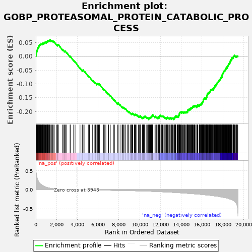
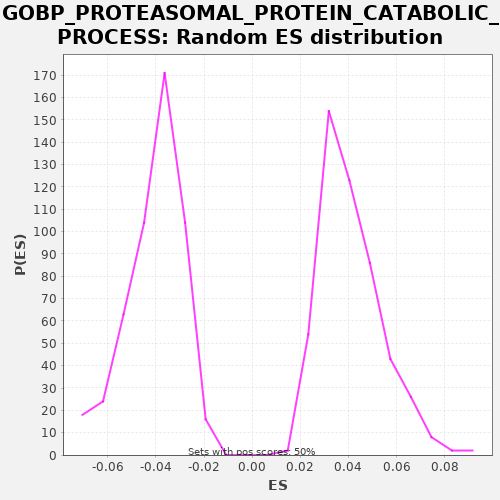

| | | Dataset | X_enriched_genes copy |
| Phenotype | NoPhenotypeAvailable |
| Upregulated in class | na_neg |
| GeneSet | GOBP_PROTEASOMAL_PROTEIN_CATABOLIC_PROCESS |
| Enrichment Score (ES) | -0.22922136 |
| Normalized Enrichment Score (NES) | -5.6784363 |
| Nominal p-value | 0.0 |
| FDR q-value | 0.0 |
| FWER p-Value | 0.0 |
Table: GSEA Results Summary

Fig 1: Enrichment plot: GOBP_PROTEASOMAL_PROTEIN_CATABOLIC_PROCESS
Profile of the Running ES Score & Positions of GeneSet Members on the Rank Ordered List
| SYMBOL | RANK IN GENE LIST | RANK METRIC SCORE | RUNNING ES | CORE ENRICHMENT | | 1 | PSMA7 | 9 | 0.534 | 0.0017 | No |
| 2 | RPL11 | 15 | 0.501 | 0.0036 | No |
| 3 | PSMB6 | 38 | 0.434 | 0.0047 | No |
| 4 | CDC20 | 40 | 0.429 | 0.0068 | No |
| 5 | RACK1 | 46 | 0.419 | 0.0087 | No |
| 6 | PSMA3 | 55 | 0.403 | 0.0105 | No |
| 7 | PSMB3 | 62 | 0.380 | 0.0124 | No |
| 8 | PSMA2 | 73 | 0.372 | 0.0140 | No |
| 9 | PSMB2 | 75 | 0.371 | 0.0162 | No |
| 10 | PSMA6 | 96 | 0.351 | 0.0173 | No |
| 11 | PSMD7 | 123 | 0.314 | 0.0181 | No |
| 12 | HSP90AB1 | 127 | 0.310 | 0.0202 | No |
| 13 | PSMB4 | 138 | 0.297 | 0.0218 | No |
| 14 | PSMD8 | 147 | 0.289 | 0.0236 | No |
| 15 | PSMB1 | 151 | 0.283 | 0.0256 | No |
| 16 | RPS27A | 158 | 0.277 | 0.0275 | No |
| 17 | PSMB5 | 161 | 0.276 | 0.0296 | No |
| 18 | PSMA4 | 183 | 0.260 | 0.0306 | No |
| 19 | UBXN1 | 244 | 0.226 | 0.0297 | No |
| 20 | EIF3H | 255 | 0.220 | 0.0313 | No |
| 21 | PSMA1 | 275 | 0.206 | 0.0325 | No |
| 22 | PARK7 | 287 | 0.202 | 0.0341 | No |
| 23 | UBA52 | 297 | 0.195 | 0.0359 | No |
| 24 | STUB1 | 301 | 0.193 | 0.0379 | No |
| 25 | FBXL6 | 318 | 0.188 | 0.0392 | No |
| 26 | PSME1 | 348 | 0.175 | 0.0399 | No |
| 27 | BCAP31 | 361 | 0.170 | 0.0414 | No |
| 28 | PSMD3 | 400 | 0.158 | 0.0416 | No |
| 29 | NOP53 | 420 | 0.155 | 0.0428 | No |
| 30 | PSMC5 | 461 | 0.145 | 0.0429 | No |
| 31 | ANAPC5 | 478 | 0.142 | 0.0442 | No |
| 32 | PSMD6 | 529 | 0.134 | 0.0438 | No |
| 33 | EDEM2 | 556 | 0.128 | 0.0446 | No |
| 34 | CSNK1E | 617 | 0.117 | 0.0437 | No |
| 35 | FBXO2 | 620 | 0.115 | 0.0457 | No |
| 36 | RBX1 | 657 | 0.108 | 0.0460 | No |
| 37 | FBXO6 | 667 | 0.108 | 0.0477 | No |
| 38 | PSMC3 | 747 | 0.095 | 0.0458 | No |
| 39 | UBB | 754 | 0.094 | 0.0476 | No |
| 40 | PSMA5 | 789 | 0.089 | 0.0480 | No |
| 41 | PSMC6 | 818 | 0.085 | 0.0488 | No |
| 42 | PSME2 | 864 | 0.079 | 0.0486 | No |
| 43 | COMMD1 | 865 | 0.079 | 0.0508 | No |
| 44 | PSMB7 | 901 | 0.074 | 0.0511 | No |
| 45 | UBE2S | 944 | 0.069 | 0.0511 | No |
| 46 | UFD1 | 1014 | 0.063 | 0.0496 | No |
| 47 | GIPC1 | 1024 | 0.062 | 0.0514 | No |
| 48 | RCN3 | 1063 | 0.058 | 0.0515 | No |
| 49 | GPX1 | 1086 | 0.056 | 0.0526 | No |
| 50 | SIRT2 | 1095 | 0.055 | 0.0543 | No |
| 51 | RBCK1 | 1137 | 0.052 | 0.0544 | No |
| 52 | PTTG1 | 1142 | 0.051 | 0.0564 | No |
| 53 | WWTR1 | 1214 | 0.046 | 0.0548 | No |
| 54 | DDRGK1 | 1243 | 0.044 | 0.0555 | No |
| 55 | PSMD11 | 1269 | 0.042 | 0.0564 | No |
| 56 | PSMD4 | 1284 | 0.041 | 0.0578 | No |
| 57 | UBE2E1 | 1347 | 0.038 | 0.0568 | No |
| 58 | PSMC2 | 1356 | 0.037 | 0.0585 | No |
| 59 | AQP11 | 1373 | 0.037 | 0.0599 | No |
| 60 | PSMD14 | 1461 | 0.032 | 0.0575 | No |
| 61 | ANKZF1 | 1507 | 0.031 | 0.0573 | No |
| 62 | FBXO31 | 1584 | 0.028 | 0.0555 | No |
| 63 | LAMP3 | 1643 | 0.026 | 0.0546 | No |
| 64 | PSMC4 | 1690 | 0.025 | 0.0544 | No |
| 65 | PSMD2 | 1778 | 0.023 | 0.0520 | No |
| 66 | KLHL22 | 1992 | 0.018 | 0.0430 | No |
| 67 | PSMD10 | 2096 | 0.017 | 0.0397 | No |
| 68 | UBE2U | 2106 | 0.016 | 0.0415 | No |
| 69 | UBE2B | 2127 | 0.016 | 0.0426 | No |
| 70 | PINK1 | 2171 | 0.016 | 0.0425 | No |
| 71 | FBXO17 | 2544 | 0.011 | 0.0251 | No |
| 72 | RNF144A | 2636 | 0.010 | 0.0225 | No |
| 73 | FBXL12 | 2760 | 0.009 | 0.0182 | No |
| 74 | UBXN6 | 2808 | 0.008 | 0.0179 | No |
| 75 | HSPBP1 | 2844 | 0.008 | 0.0183 | No |
| 76 | FBXL13 | 2985 | 0.007 | 0.0131 | No |
| 77 | UBE2C | 3306 | 0.004 | -0.0015 | No |
| 78 | DNAJC18 | 3316 | 0.004 | 0.0002 | No |
| 79 | SUMO2 | 3643 | 0.002 | -0.0148 | No |
| 80 | NR1D1 | 3780 | 0.001 | -0.0198 | No |
| 81 | ALAD | 4258 | -0.002 | -0.0427 | No |
| 82 | WNT10B | 4464 | -0.003 | -0.0513 | No |
| 83 | FBXL8 | 4522 | -0.003 | -0.0521 | No |
| 84 | UBXN11 | 4528 | -0.003 | -0.0502 | No |
| 85 | FBXO4 | 4555 | -0.003 | -0.0494 | No |
| 86 | FBXO27 | 4717 | -0.004 | -0.0557 | No |
| 87 | FBXO44 | 5057 | -0.006 | -0.0713 | No |
| 88 | SGTB | 5165 | -0.006 | -0.0748 | No |
| 89 | SEC61B | 5474 | -0.008 | -0.0888 | No |
| 90 | HFE | 5495 | -0.008 | -0.0876 | No |
| 91 | JKAMP | 5680 | -0.009 | -0.0951 | No |
| 92 | FBXL2 | 5754 | -0.009 | -0.0968 | No |
| 93 | PMAIP1 | 5883 | -0.010 | -0.1014 | No |
| 94 | UBE2A | 5891 | -0.010 | -0.0995 | No |
| 95 | PRKCG | 5921 | -0.010 | -0.0989 | No |
| 96 | TRIM72 | 5966 | -0.010 | -0.0990 | No |
| 97 | TAF9 | 6041 | -0.010 | -0.1007 | No |
| 98 | NEMF | 6119 | -0.011 | -0.1026 | No |
| 99 | PSMB11 | 6122 | -0.011 | -0.1005 | No |
| 100 | STYX | 6518 | -0.012 | -0.1191 | No |
| 101 | CDC16 | 6602 | -0.013 | -0.1213 | No |
| 102 | USP44 | 6746 | -0.013 | -0.1266 | No |
| 103 | TRIM71 | 6993 | -0.015 | -0.1374 | No |
| 104 | KCTD2 | 7012 | -0.015 | -0.1361 | No |
| 105 | TRIB3 | 7172 | -0.015 | -0.1423 | No |
| 106 | ANAPC11 | 7473 | -0.017 | -0.1559 | No |
| 107 | SIAH3 | 7580 | -0.017 | -0.1593 | No |
| 108 | CCNB1 | 7856 | -0.018 | -0.1716 | No |
| 109 | DNAAF4 | 7924 | -0.019 | -0.1729 | No |
| 110 | PSMC1 | 7926 | -0.019 | -0.1708 | No |
| 111 | TMEM67 | 7929 | -0.019 | -0.1687 | No |
| 112 | RNF122 | 8115 | -0.020 | -0.1763 | No |
| 113 | FBXW5 | 8304 | -0.021 | -0.1840 | No |
| 114 | TRIM13 | 8370 | -0.021 | -0.1852 | No |
| 115 | ECRG4 | 8399 | -0.021 | -0.1845 | No |
| 116 | PPP2R5C | 8483 | -0.022 | -0.1867 | No |
| 117 | RNF180 | 8589 | -0.022 | -0.1900 | No |
| 118 | SHARPIN | 8614 | -0.022 | -0.1891 | No |
| 119 | FBXL20 | 8799 | -0.023 | -0.1966 | No |
| 120 | UBAC2 | 8939 | -0.024 | -0.2017 | No |
| 121 | CEBPA | 8964 | -0.025 | -0.2008 | No |
| 122 | NSFL1C | 9096 | -0.026 | -0.2055 | No |
| 123 | NKD2 | 9214 | -0.026 | -0.2095 | No |
| 124 | FOXF2 | 9251 | -0.026 | -0.2092 | No |
| 125 | RNF187 | 9254 | -0.027 | -0.2071 | No |
| 126 | AMN1 | 9294 | -0.027 | -0.2070 | No |
| 127 | ARRB2 | 9341 | -0.027 | -0.2072 | No |
| 128 | NHLRC1 | 9491 | -0.028 | -0.2129 | No |
| 129 | NUDT15 | 9496 | -0.028 | -0.2109 | No |
| 130 | TRIM3 | 9558 | -0.029 | -0.2119 | No |
| 131 | GBA | 9566 | -0.029 | -0.2101 | No |
| 132 | PRKN | 9622 | -0.029 | -0.2108 | No |
| 133 | PSMF1 | 9718 | -0.030 | -0.2136 | No |
| 134 | HECW1 | 9734 | -0.030 | -0.2122 | No |
| 135 | VCP | 9890 | -0.031 | -0.2182 | No |
| 136 | ARRB1 | 9901 | -0.031 | -0.2165 | No |
| 137 | DDI1 | 9987 | -0.032 | -0.2188 | No |
| 138 | RFFL | 10027 | -0.032 | -0.2187 | No |
| 139 | BBS7 | 10054 | -0.032 | -0.2178 | No |
| 140 | ECSCR | 10062 | -0.032 | -0.2160 | No |
| 141 | UBE2W | 10250 | -0.034 | -0.2237 | No |
| 142 | RAD23A | 10285 | -0.035 | -0.2233 | No |
| 143 | SPSB4 | 10293 | -0.035 | -0.2215 | No |
| 144 | FBXL22 | 10363 | -0.035 | -0.2229 | No |
| 145 | SHH | 10366 | -0.035 | -0.2208 | No |
| 146 | FBXW4 | 10390 | -0.035 | -0.2198 | No |
| 147 | FBXO22 | 10433 | -0.036 | -0.2199 | No |
| 148 | UBE2V2 | 10479 | -0.036 | -0.2201 | No |
| 149 | FOXRED2 | 10497 | -0.036 | -0.2188 | No |
| 150 | BAG2 | 10506 | -0.036 | -0.2170 | No |
| 151 | ELOB | 10623 | -0.038 | -0.2209 | No |
| 152 | SGTA | 10703 | -0.038 | -0.2229 | No |
| 153 | DERL2 | 10731 | -0.039 | -0.2221 | No |
| 154 | RNF19B | 10867 | -0.040 | -0.2270 | Yes |
| 155 | RNF121 | 10868 | -0.040 | -0.2248 | Yes |
| 156 | CDC26 | 10876 | -0.040 | -0.2230 | Yes |
| 157 | KLHL42 | 10944 | -0.041 | -0.2244 | Yes |
| 158 | WFS1 | 10965 | -0.041 | -0.2232 | Yes |
| 159 | HECW2 | 10982 | -0.041 | -0.2219 | Yes |
| 160 | RNFT1 | 11038 | -0.041 | -0.2226 | Yes |
| 161 | FHIT | 11071 | -0.042 | -0.2221 | Yes |
| 162 | APOE | 11084 | -0.042 | -0.2205 | Yes |
| 163 | HSPA1B | 11117 | -0.042 | -0.2200 | Yes |
| 164 | TOR1A | 11137 | -0.042 | -0.2188 | Yes |
| 165 | DET1 | 11147 | -0.042 | -0.2171 | Yes |
| 166 | ZFAND2B | 11172 | -0.043 | -0.2162 | Yes |
| 167 | FBXL4 | 11223 | -0.043 | -0.2166 | Yes |
| 168 | SH3RF2 | 11224 | -0.043 | -0.2145 | Yes |
| 169 | KCTD13 | 11238 | -0.043 | -0.2130 | Yes |
| 170 | HSPA1A | 11247 | -0.043 | -0.2112 | Yes |
| 171 | DERL3 | 11469 | -0.046 | -0.2206 | Yes |
| 172 | PSMB9 | 11477 | -0.046 | -0.2188 | Yes |
| 173 | PML | 11498 | -0.046 | -0.2177 | Yes |
| 174 | UCHL5 | 11605 | -0.047 | -0.2211 | Yes |
| 175 | TRIM9 | 11656 | -0.048 | -0.2215 | Yes |
| 176 | UBE2D3 | 11753 | -0.049 | -0.2244 | Yes |
| 177 | DNAJB14 | 11782 | -0.050 | -0.2237 | Yes |
| 178 | UBE2J1 | 11784 | -0.050 | -0.2215 | Yes |
| 179 | ANAPC10 | 11791 | -0.050 | -0.2197 | Yes |
| 180 | DNAJB2 | 11827 | -0.050 | -0.2193 | Yes |
| 181 | PRPF19 | 11911 | -0.052 | -0.2215 | Yes |
| 182 | KEAP1 | 11920 | -0.052 | -0.2197 | Yes |
| 183 | USP13 | 11927 | -0.052 | -0.2179 | Yes |
| 184 | TTC36 | 11930 | -0.052 | -0.2158 | Yes |
| 185 | FBXL7 | 11958 | -0.052 | -0.2150 | Yes |
| 186 | KLHL40 | 11971 | -0.052 | -0.2134 | Yes |
| 187 | RHBDF1 | 12077 | -0.054 | -0.2168 | Yes |
| 188 | TMUB1 | 12117 | -0.054 | -0.2166 | Yes |
| 189 | BTRC | 12159 | -0.055 | -0.2166 | Yes |
| 190 | SDF2L1 | 12203 | -0.055 | -0.2167 | Yes |
| 191 | DESI1 | 12265 | -0.056 | -0.2177 | Yes |
| 192 | PSMB8 | 12373 | -0.058 | -0.2212 | Yes |
| 193 | FBXL5 | 12437 | -0.059 | -0.2223 | Yes |
| 194 | OS9 | 12514 | -0.060 | -0.2241 | Yes |
| 195 | DMAC2 | 12581 | -0.061 | -0.2254 | Yes |
| 196 | OSBPL7 | 12585 | -0.061 | -0.2234 | Yes |
| 197 | RHBDD2 | 12638 | -0.062 | -0.2239 | Yes |
| 198 | HERPUD1 | 12667 | -0.062 | -0.2232 | Yes |
| 199 | RMND5B | 12671 | -0.062 | -0.2212 | Yes |
| 200 | UBC | 12761 | -0.063 | -0.2237 | Yes |
| 201 | GID4 | 12836 | -0.064 | -0.2254 | Yes |
| 202 | SOCS6 | 12863 | -0.065 | -0.2245 | Yes |
| 203 | PSMB10 | 12923 | -0.065 | -0.2255 | Yes |
| 204 | HSP90B1 | 12931 | -0.066 | -0.2236 | Yes |
| 205 | PRICKLE1 | 12945 | -0.066 | -0.2221 | Yes |
| 206 | PKD1 | 13054 | -0.068 | -0.2256 | Yes |
| 207 | ERLEC1 | 13060 | -0.068 | -0.2237 | Yes |
| 208 | FBXO48 | 13104 | -0.069 | -0.2238 | Yes |
| 209 | DCAF11 | 13156 | -0.069 | -0.2243 | Yes |
| 210 | SIRT6 | 13188 | -0.070 | -0.2237 | Yes |
| 211 | RNF185 | 13293 | -0.071 | -0.2270 | Yes |
| 212 | UBE2K | 13311 | -0.072 | -0.2257 | Yes |
| 213 | POMT2 | 13322 | -0.072 | -0.2241 | Yes |
| 214 | TREM2 | 13339 | -0.072 | -0.2227 | Yes |
| 215 | RNF41 | 13346 | -0.073 | -0.2208 | Yes |
| 216 | UMOD | 13397 | -0.073 | -0.2213 | Yes |
| 217 | GET4 | 13407 | -0.073 | -0.2196 | Yes |
| 218 | SPSB1 | 13454 | -0.074 | -0.2198 | Yes |
| 219 | WWP2 | 13457 | -0.074 | -0.2177 | Yes |
| 220 | MTA1 | 13480 | -0.075 | -0.2167 | Yes |
| 221 | CAV1 | 13493 | -0.075 | -0.2151 | Yes |
| 222 | OPHN1 | 13606 | -0.077 | -0.2188 | Yes |
| 223 | PCNP | 13649 | -0.077 | -0.2189 | Yes |
| 224 | LRRK2 | 13660 | -0.077 | -0.2172 | Yes |
| 225 | RNF34 | 13738 | -0.079 | -0.2191 | Yes |
| 226 | IFI27 | 13741 | -0.079 | -0.2170 | Yes |
| 227 | NHLRC3 | 13753 | -0.079 | -0.2154 | Yes |
| 228 | PSMD9 | 13757 | -0.079 | -0.2133 | Yes |
| 229 | FBXL19 | 13798 | -0.080 | -0.2133 | Yes |
| 230 | KCTD17 | 13813 | -0.080 | -0.2118 | Yes |
| 231 | KCNE2 | 13820 | -0.080 | -0.2099 | Yes |
| 232 | UBE2D1 | 13822 | -0.080 | -0.2078 | Yes |
| 233 | SELENOS | 13852 | -0.081 | -0.2071 | Yes |
| 234 | UFL1 | 13865 | -0.081 | -0.2056 | Yes |
| 235 | UBXN2B | 13871 | -0.081 | -0.2037 | Yes |
| 236 | ARAF | 13897 | -0.082 | -0.2028 | Yes |
| 237 | ZER1 | 13928 | -0.082 | -0.2022 | Yes |
| 238 | CRBN | 13965 | -0.083 | -0.2019 | Yes |
| 239 | ANAPC15 | 14054 | -0.084 | -0.2043 | Yes |
| 240 | EDEM1 | 14056 | -0.084 | -0.2022 | Yes |
| 241 | RNF139 | 14060 | -0.085 | -0.2002 | Yes |
| 242 | PSMD12 | 14136 | -0.086 | -0.2019 | Yes |
| 243 | TMUB2 | 14221 | -0.088 | -0.2042 | Yes |
| 244 | ANAPC2 | 14241 | -0.089 | -0.2030 | Yes |
| 245 | TMEM129 | 14296 | -0.090 | -0.2036 | Yes |
| 246 | SPSB2 | 14302 | -0.090 | -0.2017 | Yes |
| 247 | UBE2J2 | 14353 | -0.091 | -0.2021 | Yes |
| 248 | DERL1 | 14400 | -0.092 | -0.2024 | Yes |
| 249 | UCHL1 | 14464 | -0.093 | -0.2035 | Yes |
| 250 | SIAH2 | 14483 | -0.093 | -0.2023 | Yes |
| 251 | RHBDD1 | 14494 | -0.093 | -0.2006 | Yes |
| 252 | SVIP | 14578 | -0.095 | -0.2028 | Yes |
| 253 | CSNK1D | 14600 | -0.096 | -0.2017 | Yes |
| 254 | FBXL18 | 14617 | -0.096 | -0.2004 | Yes |
| 255 | RNF14 | 14634 | -0.096 | -0.1990 | Yes |
| 256 | FZR1 | 14639 | -0.096 | -0.1970 | Yes |
| 257 | FAF1 | 14643 | -0.096 | -0.1950 | Yes |
| 258 | SPSB3 | 14651 | -0.096 | -0.1932 | Yes |
| 259 | GLMN | 14728 | -0.098 | -0.1950 | Yes |
| 260 | BAG6 | 14748 | -0.099 | -0.1938 | Yes |
| 261 | CLU | 14751 | -0.099 | -0.1917 | Yes |
| 262 | RNF5 | 14823 | -0.100 | -0.1933 | Yes |
| 263 | BFAR | 14852 | -0.100 | -0.1926 | Yes |
| 264 | PSMD13 | 14853 | -0.100 | -0.1904 | Yes |
| 265 | ARMC8 | 14862 | -0.100 | -0.1886 | Yes |
| 266 | MTM1 | 14904 | -0.101 | -0.1886 | Yes |
| 267 | DDIT3 | 14958 | -0.102 | -0.1892 | Yes |
| 268 | KLHL15 | 14976 | -0.103 | -0.1879 | Yes |
| 269 | AUP1 | 14992 | -0.103 | -0.1865 | Yes |
| 270 | UBE2G2 | 15039 | -0.104 | -0.1867 | Yes |
| 271 | FBXL15 | 15073 | -0.105 | -0.1863 | Yes |
| 272 | AGAP3 | 15091 | -0.105 | -0.1850 | Yes |
| 273 | SUMO1 | 15100 | -0.105 | -0.1832 | Yes |
| 274 | ERCC8 | 15135 | -0.106 | -0.1828 | Yes |
| 275 | PSMD5 | 15140 | -0.106 | -0.1808 | Yes |
| 276 | CHFR | 15194 | -0.107 | -0.1814 | Yes |
| 277 | AREL1 | 15244 | -0.108 | -0.1818 | Yes |
| 278 | KCTD5 | 15252 | -0.108 | -0.1800 | Yes |
| 279 | YOD1 | 15294 | -0.109 | -0.1800 | Yes |
| 280 | MAEA | 15307 | -0.110 | -0.1784 | Yes |
| 281 | BRSK2 | 15381 | -0.111 | -0.1801 | Yes |
| 282 | RNF126 | 15490 | -0.114 | -0.1836 | Yes |
| 283 | HSPA5 | 15498 | -0.114 | -0.1818 | Yes |
| 284 | DVL1 | 15504 | -0.114 | -0.1798 | Yes |
| 285 | KLHL20 | 15557 | -0.115 | -0.1804 | Yes |
| 286 | GNA12 | 15560 | -0.115 | -0.1783 | Yes |
| 287 | NEDD4L | 15576 | -0.116 | -0.1769 | Yes |
| 288 | CBFA2T3 | 15599 | -0.116 | -0.1759 | Yes |
| 289 | PLK3 | 15719 | -0.119 | -0.1799 | Yes |
| 290 | HECTD3 | 15740 | -0.120 | -0.1788 | Yes |
| 291 | UGGT2 | 15751 | -0.120 | -0.1771 | Yes |
| 292 | FBXO33 | 15766 | -0.120 | -0.1757 | Yes |
| 293 | DAB2 | 15784 | -0.121 | -0.1744 | Yes |
| 294 | FBXL17 | 15842 | -0.122 | -0.1752 | Yes |
| 295 | MAD2L1 | 15859 | -0.122 | -0.1739 | Yes |
| 296 | GABARAPL2 | 15911 | -0.123 | -0.1744 | Yes |
| 297 | BAG5 | 15944 | -0.124 | -0.1739 | Yes |
| 298 | BUB3 | 15952 | -0.125 | -0.1720 | Yes |
| 299 | FBXO38 | 15955 | -0.125 | -0.1700 | Yes |
| 300 | PBK | 16012 | -0.126 | -0.1707 | Yes |
| 301 | KAT5 | 16024 | -0.127 | -0.1691 | Yes |
| 302 | NUPR1 | 16031 | -0.127 | -0.1672 | Yes |
| 303 | UBXN8 | 16055 | -0.127 | -0.1663 | Yes |
| 304 | RAD23B | 16064 | -0.128 | -0.1645 | Yes |
| 305 | DDA1 | 16091 | -0.129 | -0.1637 | Yes |
| 306 | BIRC2 | 16104 | -0.129 | -0.1621 | Yes |
| 307 | RNF144B | 16134 | -0.129 | -0.1615 | Yes |
| 308 | TRIM39 | 16135 | -0.130 | -0.1593 | Yes |
| 309 | ANAPC4 | 16136 | -0.130 | -0.1571 | Yes |
| 310 | PSEN1 | 16159 | -0.130 | -0.1560 | Yes |
| 311 | TRIM2 | 16184 | -0.131 | -0.1551 | Yes |
| 312 | KCTD10 | 16205 | -0.131 | -0.1540 | Yes |
| 313 | ANAPC7 | 16232 | -0.132 | -0.1532 | Yes |
| 314 | GID8 | 16241 | -0.133 | -0.1514 | Yes |
| 315 | USP5 | 16308 | -0.134 | -0.1527 | Yes |
| 316 | UBE2G1 | 16330 | -0.135 | -0.1516 | Yes |
| 317 | MAN1B1 | 16399 | -0.137 | -0.1530 | Yes |
| 318 | ARIH2 | 16422 | -0.138 | -0.1520 | Yes |
| 319 | COP1 | 16429 | -0.138 | -0.1501 | Yes |
| 320 | ATXN3 | 16442 | -0.138 | -0.1485 | Yes |
| 321 | DNAJB9 | 16456 | -0.138 | -0.1470 | Yes |
| 322 | ERLIN1 | 16459 | -0.139 | -0.1450 | Yes |
| 323 | SPOPL | 16462 | -0.139 | -0.1429 | Yes |
| 324 | UBE2H | 16476 | -0.139 | -0.1414 | Yes |
| 325 | CDC34 | 16500 | -0.140 | -0.1404 | Yes |
| 326 | DAB2IP | 16501 | -0.140 | -0.1382 | Yes |
| 327 | OGT | 16512 | -0.140 | -0.1365 | Yes |
| 328 | PELI1 | 16553 | -0.141 | -0.1365 | Yes |
| 329 | RNF217 | 16577 | -0.142 | -0.1355 | Yes |
| 330 | USP14 | 16596 | -0.143 | -0.1342 | Yes |
| 331 | SMURF1 | 16599 | -0.143 | -0.1322 | Yes |
| 332 | FBXL16 | 16635 | -0.144 | -0.1318 | Yes |
| 333 | UBE4B | 16704 | -0.146 | -0.1332 | Yes |
| 334 | CDK2 | 16715 | -0.147 | -0.1315 | Yes |
| 335 | EDEM3 | 16720 | -0.147 | -0.1296 | Yes |
| 336 | SYVN1 | 16736 | -0.147 | -0.1282 | Yes |
| 337 | DNAJB12 | 16768 | -0.148 | -0.1276 | Yes |
| 338 | FBXL3 | 16787 | -0.149 | -0.1264 | Yes |
| 339 | PPP2CB | 16804 | -0.150 | -0.1250 | Yes |
| 340 | SMURF2 | 16824 | -0.150 | -0.1238 | Yes |
| 341 | PIAS1 | 16825 | -0.150 | -0.1216 | Yes |
| 342 | MAPK9 | 16866 | -0.151 | -0.1216 | Yes |
| 343 | UBQLN1 | 16913 | -0.153 | -0.1218 | Yes |
| 344 | PSMD1 | 16920 | -0.153 | -0.1199 | Yes |
| 345 | ARNTL | 16973 | -0.155 | -0.1205 | Yes |
| 346 | ZYG11B | 16987 | -0.155 | -0.1190 | Yes |
| 347 | CDC23 | 17015 | -0.156 | -0.1182 | Yes |
| 348 | N4BP1 | 17036 | -0.157 | -0.1171 | Yes |
| 349 | AKT1 | 17129 | -0.161 | -0.1197 | Yes |
| 350 | TRIB1 | 17131 | -0.161 | -0.1176 | Yes |
| 351 | FBXO45 | 17138 | -0.161 | -0.1157 | Yes |
| 352 | RNF103 | 17139 | -0.161 | -0.1135 | Yes |
| 353 | FBXO9 | 17173 | -0.162 | -0.1131 | Yes |
| 354 | HACE1 | 17200 | -0.163 | -0.1123 | Yes |
| 355 | RYBP | 17217 | -0.164 | -0.1109 | Yes |
| 356 | ERLIN2 | 17237 | -0.164 | -0.1097 | Yes |
| 357 | GSK3A | 17243 | -0.164 | -0.1078 | Yes |
| 358 | CUL5 | 17257 | -0.165 | -0.1063 | Yes |
| 359 | PLAA | 17282 | -0.166 | -0.1054 | Yes |
| 360 | CCAR2 | 17300 | -0.167 | -0.1041 | Yes |
| 361 | PLK2 | 17359 | -0.169 | -0.1049 | Yes |
| 362 | ZNRF1 | 17386 | -0.170 | -0.1041 | Yes |
| 363 | PSME3 | 17400 | -0.170 | -0.1026 | Yes |
| 364 | NEDD4 | 17425 | -0.171 | -0.1017 | Yes |
| 365 | ITCH | 17427 | -0.171 | -0.0996 | Yes |
| 366 | UBXN2A | 17436 | -0.171 | -0.0978 | Yes |
| 367 | CUL4A | 17453 | -0.172 | -0.0964 | Yes |
| 368 | UBR1 | 17484 | -0.173 | -0.0958 | Yes |
| 369 | TMEM259 | 17500 | -0.174 | -0.0944 | Yes |
| 370 | IL33 | 17530 | -0.175 | -0.0938 | Yes |
| 371 | MAP1A | 17552 | -0.176 | -0.0927 | Yes |
| 372 | FBXW7 | 17573 | -0.177 | -0.0916 | Yes |
| 373 | UBQLN2 | 17604 | -0.179 | -0.0909 | Yes |
| 374 | ENC1 | 17621 | -0.179 | -0.0896 | Yes |
| 375 | CDC27 | 17625 | -0.180 | -0.0876 | Yes |
| 376 | RCHY1 | 17656 | -0.181 | -0.0870 | Yes |
| 377 | SMAD7 | 17693 | -0.183 | -0.0867 | Yes |
| 378 | PCBP2 | 17706 | -0.184 | -0.0851 | Yes |
| 379 | FBXW11 | 17725 | -0.185 | -0.0839 | Yes |
| 380 | NUB1 | 17757 | -0.186 | -0.0833 | Yes |
| 381 | SKP2 | 17766 | -0.187 | -0.0815 | Yes |
| 382 | AMFR | 17768 | -0.187 | -0.0794 | Yes |
| 383 | CCDC47 | 17817 | -0.189 | -0.0798 | Yes |
| 384 | PITHD1 | 17818 | -0.189 | -0.0776 | Yes |
| 385 | NPLOC4 | 17834 | -0.190 | -0.0762 | Yes |
| 386 | UBQLN4 | 17870 | -0.191 | -0.0758 | Yes |
| 387 | ANAPC1 | 17912 | -0.194 | -0.0758 | Yes |
| 388 | TBL1X | 17918 | -0.194 | -0.0739 | Yes |
| 389 | MDM2 | 17920 | -0.194 | -0.0717 | Yes |
| 390 | FBXW8 | 17922 | -0.194 | -0.0696 | Yes |
| 391 | PLK1 | 17945 | -0.195 | -0.0686 | Yes |
| 392 | RNF19A | 17949 | -0.195 | -0.0665 | Yes |
| 393 | UBE4A | 17966 | -0.196 | -0.0652 | Yes |
| 394 | WWP1 | 17987 | -0.197 | -0.0641 | Yes |
| 395 | UBXN4 | 17997 | -0.197 | -0.0623 | Yes |
| 396 | NFE2L2 | 18021 | -0.199 | -0.0614 | Yes |
| 397 | PRKACA | 18037 | -0.199 | -0.0600 | Yes |
| 398 | FAF2 | 18069 | -0.201 | -0.0594 | Yes |
| 399 | TNFAIP1 | 18087 | -0.202 | -0.0581 | Yes |
| 400 | CUL2 | 18090 | -0.202 | -0.0560 | Yes |
| 401 | FBXL14 | 18103 | -0.203 | -0.0545 | Yes |
| 402 | SOCS4 | 18131 | -0.204 | -0.0537 | Yes |
| 403 | SEL1L | 18148 | -0.205 | -0.0524 | Yes |
| 404 | TLK2 | 18174 | -0.207 | -0.0515 | Yes |
| 405 | UBR3 | 18193 | -0.207 | -0.0502 | Yes |
| 406 | TRIB2 | 18219 | -0.209 | -0.0494 | Yes |
| 407 | RMND5A | 18270 | -0.213 | -0.0498 | Yes |
| 408 | CUL4B | 18278 | -0.213 | -0.0480 | Yes |
| 409 | BUB1B | 18289 | -0.214 | -0.0463 | Yes |
| 410 | TRIM25 | 18301 | -0.214 | -0.0447 | Yes |
| 411 | ANKIB1 | 18302 | -0.214 | -0.0425 | Yes |
| 412 | UBR2 | 18349 | -0.217 | -0.0428 | Yes |
| 413 | TMTC3 | 18351 | -0.217 | -0.0406 | Yes |
| 414 | SIRT1 | 18360 | -0.218 | -0.0389 | Yes |
| 415 | SDCBP | 18443 | -0.224 | -0.0410 | Yes |
| 416 | USP25 | 18448 | -0.224 | -0.0390 | Yes |
| 417 | LTN1 | 18450 | -0.224 | -0.0369 | Yes |
| 418 | HECTD1 | 18475 | -0.226 | -0.0360 | Yes |
| 419 | TMF1 | 18492 | -0.227 | -0.0346 | Yes |
| 420 | SOCS5 | 18507 | -0.228 | -0.0332 | Yes |
| 421 | RNF40 | 18528 | -0.230 | -0.0320 | Yes |
| 422 | ARIH1 | 18542 | -0.230 | -0.0305 | Yes |
| 423 | ECPAS | 18546 | -0.231 | -0.0285 | Yes |
| 424 | USP7 | 18556 | -0.231 | -0.0268 | Yes |
| 425 | PSME4 | 18614 | -0.237 | -0.0276 | Yes |
| 426 | ATE1 | 18637 | -0.239 | -0.0266 | Yes |
| 427 | RNF216 | 18664 | -0.242 | -0.0257 | Yes |
| 428 | DNAJC10 | 18668 | -0.242 | -0.0237 | Yes |
| 429 | CLOCK | 18695 | -0.245 | -0.0229 | Yes |
| 430 | FBXO5 | 18707 | -0.245 | -0.0213 | Yes |
| 431 | CTNNB1 | 18716 | -0.247 | -0.0195 | Yes |
| 432 | STT3B | 18719 | -0.247 | -0.0174 | Yes |
| 433 | RNF4 | 18735 | -0.248 | -0.0160 | Yes |
| 434 | TOPORS | 18755 | -0.251 | -0.0148 | Yes |
| 435 | SPOP | 18760 | -0.252 | -0.0129 | Yes |
| 436 | ANAPC16 | 18789 | -0.256 | -0.0122 | Yes |
| 437 | USP19 | 18855 | -0.264 | -0.0134 | Yes |
| 438 | DDB1 | 18856 | -0.264 | -0.0112 | Yes |
| 439 | KIF14 | 18865 | -0.264 | -0.0094 | Yes |
| 440 | AURKA | 18870 | -0.265 | -0.0075 | Yes |
| 441 | WAC | 18871 | -0.265 | -0.0053 | Yes |
| 442 | CSNK1A1 | 18901 | -0.268 | -0.0046 | Yes |
| 443 | TBL1XR1 | 18977 | -0.276 | -0.0064 | Yes |
| 444 | AURKB | 19000 | -0.279 | -0.0053 | Yes |
| 445 | CDK1 | 19001 | -0.279 | -0.0031 | Yes |
| 446 | UGGT1 | 19028 | -0.283 | -0.0023 | Yes |
| 447 | CUL1 | 19046 | -0.287 | -0.0010 | Yes |
| 448 | CCNF | 19054 | -0.288 | 0.0008 | Yes |
| 449 | FMR1 | 19087 | -0.295 | 0.0013 | Yes |
| 450 | GSK3B | 19113 | -0.300 | 0.0022 | Yes |
| 451 | DDI2 | 19128 | -0.301 | 0.0036 | Yes |
| 452 | HUWE1 | 19249 | -0.334 | -0.0005 | Yes |
| 453 | TAF1 | 19315 | -0.360 | -0.0018 | Yes |
| 454 | CUL3 | 19329 | -0.369 | -0.0002 | Yes |
| 455 | XPO1 | 19350 | -0.383 | 0.0009 | Yes |
| 456 | CD2AP | 19387 | -0.420 | 0.0012 | Yes |
| 457 | SMARCC1 | 19441 | -0.528 | 0.0006 | Yes |
Table: GSEA details [plain text format]

Fig 2: GOBP_PROTEASOMAL_PROTEIN_CATABOLIC_PROCESS: Random ES distribution
Gene set null distribution of ES for GOBP_PROTEASOMAL_PROTEIN_CATABOLIC_PROCESS